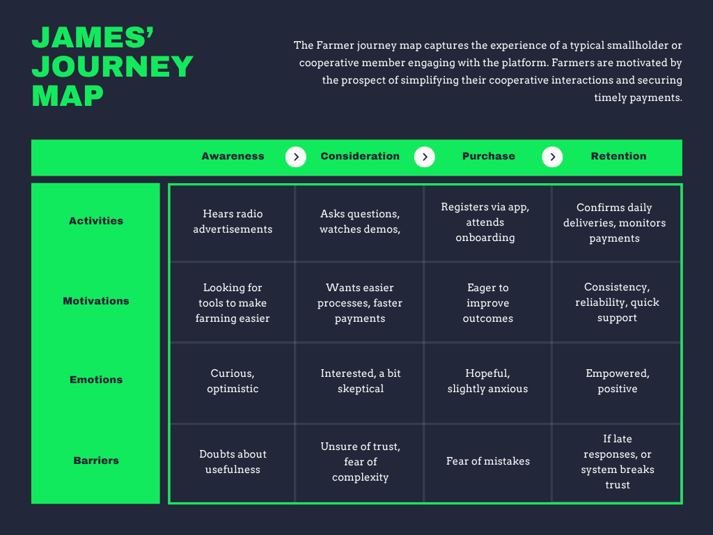

Customer Journey Maps


Customer Journey Imbuto Platform
The Customer Journey map outlines the key stages and touchpoints that users experience as they interact with the Imbuto platform. This high-level view helps align stakeholders and optimize the user experience from first awareness through long-term engagement.
1. Awareness
- User Actions: Individuals learn about Imbuto through community outreach, partner organizations, and online campaigns.
- Touchpoints: Social media, community events, newsletters, partner referrals.
- User Mindset: Curious and seeking opportunity for growth and empowerment.
2. Consideration
- User Actions: Prospective users research the platform, explore program offerings, and seek testimonials or demonstrations.
- Touchpoints: Website information pages, demo sessions, online reviews, word-of-mouth.
- User Mindset: Evaluative, weighing benefits and fit for their needs.
3. Registration
- User Actions: Users sign up, create profiles, and select programs or initiatives to participate in.
- Touchpoints: Online registration portal, onboarding support, welcome communications.
- User Mindset: Motivated and hopeful; looking for an easy onboarding experience.
4. Active Engagement
- User Actions: Users actively participate in programs, submit inputs, track their progress, and interact with the platform tools.
- Touchpoints: Mobile apps, web dashboards, notifications, events.
- User Mindset: Engaged and supported; expecting meaningful impact and clear communication.
5. Retention and Growth
- User Actions: Continued participation with the platform, engaging in advanced features, renewing memberships, and advocating for Imbuto.
- Touchpoints: Progress reports, community forums, renewal reminders, feedback surveys.
- User Mindset: Loyal and empowered; driven by positive outcomes and community connection.
6. Support
- User Actions: Users seek technical help, guidance on participation, or assistance with platform features.
- Touchpoints: Helpdesk, FAQs, chat and call support, help articles.
- User Mindset: Confident that support is accessible and responsive.
This customer journey serves as a framework to identify opportunities for improving user experience with the Imbuto platform.